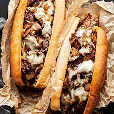

Description
A Philly cheesesteak is the ultimate indulgence — thinly sliced steak,
melted cheese, and sauteed onions come together
for a crazy-delicious bite packed with rich, savory flavor.
Ingredients
- salt
- black pepper
- paprika
- chili powder
- onion powder
- garlic powder
- dried thyme
- dried marjoram
- dried basil
- beef sirloin, cut into thin 2 inch strips
- vegetable oil
- yellow onion
- green bell pepper
- Swiss cheese
- hoagie rolls, split lengthwise
Steps:
You'll find the full, step-by-step recipe below — but here's a brief
overview of what you can expect when you make philly cheesesteaks at home:
- Mix together salt, pepper, paprika, chili powder, onion powder, garlic powder, thyme, marjoram, and basil in a small bowl.
- Place beef in a large bowl. Sprinkle seasoning mixture over top and stir to coat.
- Heat 1/2 of the oil in a skillet over medium-high heat. Add beef and saute to the desired doneness. Remove to a plate.
- Heat the remaining oil in the skillet. Add onion and green pepper and saute until tender.
- Preheat the oven on the broiler setting.
- Divide cooked beef between the bottoms of 4 rolls. Layer with onion and green pepper, then top with sliced cheese. Place on a cookie sheet.
- Broil in the preheated oven until cheese is melted.
- Cover with tops of rolls and serve.
Return to top
Return to main page